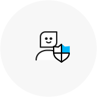
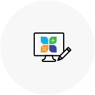
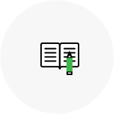
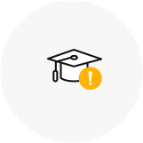
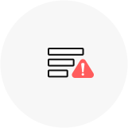

본 교육원의 인터넷원격훈련은 『고용보험법』 제27조 및 제28조와 같은 법 시행령 제41조 및 제42조, 『근로자직업능력개발법』 제20조 및 제24조, 같은 법 시행령 제19조 및
제22조와 같은 법 시행규칙 제8조에 따라 사업주가 실시하는 직업능력개발훈련입니다. 사업주 직업능력개발훈련(위탁)이란 사업주가 근로자의 능력개발향상을 위해 훈련비를
부담하는 경우 직업능력개발훈련에 소요되는 비용을 사업주에게 지원하는 제도입니다. 따라서 아래의 사항에 유의하여 훈련에 임해주시기 바랍니다.
교육생 유의사항
- 1. 공지된 훈련세부일정에 따라 본인이 직접 훈련을 수강하여야 하며 대리,허위 수강등을 하는 경우에는 고용노동부로부터 훈련비용을 지원받을 수 없습니다.
- 2. 지방노동관서의 장으로부터 지정받은 훈련기간이 종료하기 전까지 반드시 평가에 참여하여야 하며, 모든 평가에 참여한 수료생 중 수료기준에 도달한 경우에 한하여 고용노동부로부터 훈련비용의 지원을 받을 수 있습니다.
- 3. 학습보고서, 평가 등의 대리, 허위 작성 기타 부정한 방법으로 수료하여 훈련비용이 지원을 받거나 받고자 하는 경우, 향후 1년간 고용보험법상의 직업능력개발훈련 비용지원을 받을 수 없게 될 수도 있습니다.
-
본인인증
- 1. 대리,허위 수강방지 및 개인정보보호를 위해 본인인증 후 학습이 가능합니다.
- 2. 최초 학습 시 휴대폰 본인인증 후 진행이 가능합니다.
- 3. 휴대폰 본인인증은 각 과정별로 진행되며 최초 학습 시 과정별로 본인인증을 진행하셔야 합니다.

-
자동등록방지(OTP/CAPTCHA) 인증
- 1. 한국산업인력공단에서 시행하는 부정(대리)수강방지를 위한 자동등록방지 시스템입니다.
- 2. 인증범위 : 학습, 시험/과제
- ①학습 : 인증 후 학습진행이 가능 (1차시, 9차시, 17차시 등 8차시 단위로 진행)
- ②시험/과제 : 인증 후 문항확인 및 응시 가능
- ※시험과제를 최종제출하지 않고 종료한 경우 재응시 시 자동등록방지(OTP/CAPTCHA) 인증 후 응시, 제출이 가능합니다.

-
학습
- 1. 일일 학습 진도랑은 1일 8강 제한차시를 초과할 수 없습니다.
- 2. 한 차시당 최소 학습시간 및 모든 페이지 학습 후 다음 차시로 진행이 가능합니다.
- 3. 학습 후 학습 진행상황에 따라 독려문자 및 독려전화가 진행되오니 개인정보를 최신정보로 유지바랍니다.

-
진행단계 평가
- 1. 진행단계평가는 강의 전체차시 기준 50%이상 되어야 응시가 가능합니다.
- 2. 진행단계평가는 1회만 응시 가능합니다.
- 3. 진행단계평가는 수강시간내에만 응시 가능하며 진행단계 평가를 응시 하셔야만 진행단계평가 이후의 차시를 수강하실 수 있습니다.

-
시험
- 1. 진도율 80% 이상시 시험 응시가 가능합니다.
- 2. 시험시간은 시험 최초 응시(열람)시부터 1시간으로 제한되며 해당 시간 내 반드시 제출하여야 합니다.
- 3. 시험은 1회 제출로 제한되며 제출 후에는 답안 수정이 불가합니다.
- 4. 시험응시 중 종료할 경우 저장상태로 변경되며 제한시간 내 제출하셔야 합니다.
- 5. 시험 시간이 종료된 경우 작성한 내용으로 자동제출됩니다.
- 6. 시험을 저장한 경우 시험 응시시간 내 제출하셔야 하며, 미제출시 자동제출 됩니다.
- 7. 훈련기간 종료일 이후 7일 이내 재응시가 가능합니다.

-
과제
- 1. 과제 문항은 진도율과 관계없이 열람 가능하나 진도율 80% 이상시 제출이 가능합니다.
- 2. 과제는 1회만 제출 가능하며 제출 후에는 수정이 불가합니다.
- 3. 단, 임시저장일 경우 과제 수정이 가능하며 최종제출을 하셔야 수료기준이 달성됩니다.
- 4. 교육기간 내 제출하지 않을 경우 미수료 됩니다.

-
미수료 안내
- 1. 문항에 대한 답안이 부족하거나 문항과 관련이 없는 답안의 경우 미수료 됩니다.
- 2. 직접 작성한 파일이 아닌 경우 미수료 됩니다. (ex. 이미지파일, PDF 파일 등)
- 3. 제출한 파일을 확인할 수 없는 경우 미수료 됩니다. (ex. 암호파일, 깨진파일, 파일오류 등)
- 4. 제출한 파일이 모사답안으로 확인될 경우 미수료 됩니다.

-
모사답안 처리기준
- 1. 모사답안 적용 대상 : 주관서술형, 과제(리포트)
- 2. 모사율 : 100% 일치 했을 시
- 3. 타인의 답안을 그대로 제출하거나 내용의 일부를 수정하여 제출한 경우 0점으로 처리됩니다.
- 4. 모사답안 확인 방법:시스템을 통한 모사답안 가능자 체크→ 교강사에 의한 모사답안 체크관리→ 학습지원팀(운영자) 모사답안 체크관리→ 확인된 모사답안 0점 처리

※ 모든 평가항목을 참여해야 하며, 진행단계평가와 시험, 과제 합산하여 100점 만점으로 환산, 100점 중 60점 이상을 취득하셔야 합니다.
※ 필수적으로 진도율이 80%이상이 충족되지 않을 시, 과제/시험을 참여할 수 없으므로 미수료 처리가 되오니 유의하세요.
※ 하루에 8강을 초과하여 수강 할 수 없습니다.